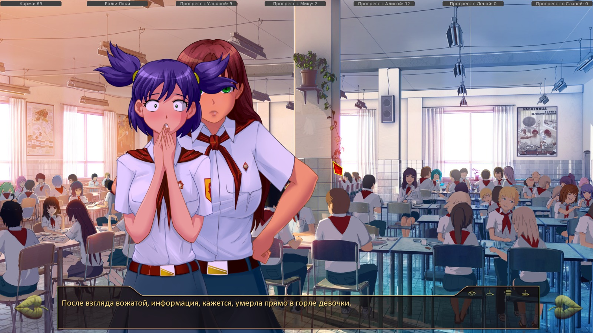
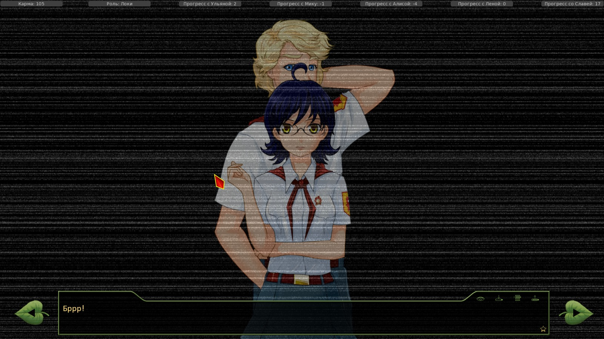
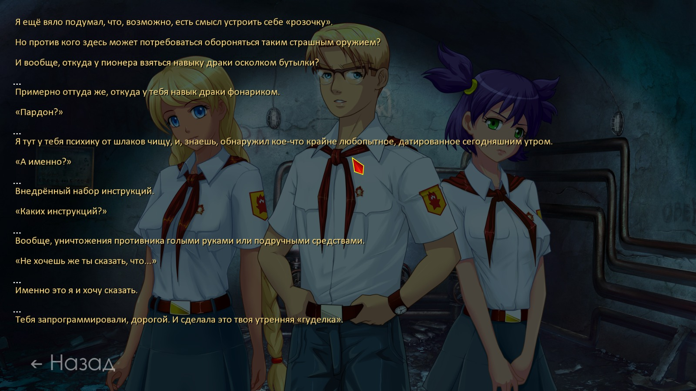
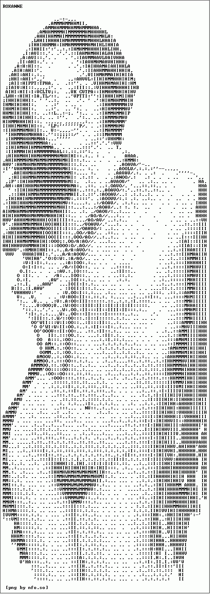

7 дней лета, билд 0.22с (Начало Классик-Слави)
Страница 3 из 4 •  1, 2, 3, 4
1, 2, 3, 4
Re: 7 дней лета, билд 0.22с (Начало Классик-Слави)
автор peregarrett в Вс 6 Сен 2015 - 0:30
178: extend " несколько раковин-фонтанчиков на отшибе, - надо вынести из-под if-else
Перед зарядкой ОД переодевается в модный костюмчик, на зарядке ее не видно, после зарядки появляется в обычной форме и панаме. Она специально надевала костюмчик, чтоб перед Санычем покрасоваться, и потом бегом переодевалась обратно?
alt_res_card_shuffles
1701 - То есть, в случае чего, его можно взять на слабо? - Её же, Лену!
с 3370 по 3392 отступ уехал, из-за чего получается ерунда.
с анализом полуфинала тоже словил мелкий баг - Алиса проиграла Жене, но выдало сначала "Рыжая перла к финалу как бульдозер", а потом - что она выбыла. Не смог с наскоку разобраться в хитросплетениях флагов, попробую потом.

peregarrett- Находка для шпиона

- Сообщения : 3264
Дата регистрации : 2014-09-07
Возраст : 36
Re: 7 дней лета, билд 0.22с (Начало Классик-Слави)
автор Dantiras в Вс 6 Сен 2015 - 1:09
Писал об этом уже здесь. Там реально какая-то проблема с отступом.peregarrett пишет:alt_day2:
178: extend " несколько раковин-фонтанчиков на отшибе, - надо вынести из-под if-else
Перед зарядкой ОД переодевается в модный костюмчик, на зарядке ее не видно, после зарядки появляется в обычной форме и панаме. Она специально надевала костюмчик, чтоб перед Санычем покрасоваться, и потом бегом переодевалась обратно?
alt_res_card_shuffles
1701 - То есть, в случае чего, его можно взять на слабо? - Её же, Лену!
с 3370 по 3392 отступ уехал, из-за чего получается ерунда.
с анализом полуфинала тоже словил мелкий баг - Алиса проиграла Жене, но выдало сначала "Рыжая перла к финалу как бульдозер", а потом - что она выбыла. Не смог с наскоку разобраться в хитросплетениях флагов, попробую потом.

Dantiras- Мизантроп

- Сообщения : 615
Дата регистрации : 2015-08-17
Re: 7 дней лета, билд 0.22с (Начало Классик-Слави)
автор Dantiras в Вс 6 Сен 2015 - 2:41
- Спойлер:
- №1 alt_day3 Завтрак с Леной, Славей, Алисой, Мику. Выбор (строки 1017, 1155, 1243, 1360 соответственно).
Суть проблемы: При отказе от утреннего эвента с Леной/Славей/Алисой/Мику (строка 1033, 1177, 1297, 1383) игнорируется факт возможного дежурства Семёна ($ alt_day3_duty). Не гоже так легко уходить от наказания.
Возможное решение: Поставить условие с alt_day3_duty для перехода на alt_day3_bf_duty.
№2 alt_day1 Вечерние посиделки с Леной.
Контекст: 2803 "Её слова, мнение вдруг стали необъяснимо важны и весомы. Мне хотелось услышать, что она скажет в ответ.
2804 "И не важно, положительным он будет или отрицательным. Значение имеет лишь то, что общение продолжается."
Строка 2806. th "С момента встречи у ворот и до текущего момента. И дай бог, чтобы завтра, послезавтра и — сколько мы тут пробудем?"
Суть проблемы: Игнорируется возможность прохождения через пробежку со Славей (alt_day1_safe) и фактическая встреча Унылки лишь у дома ОД.
Возможное решение: Сделать условие прохождения по alt_day1_safe (alt_day1_sl_conv с учётом каноничного 1-го дня).
№3 alt_day1 Алиса взламывает столовую.
2149 me "Это ведь не хиханьки с обливаниями, может и по загривку прилететь."
Суть проблемы: Игнорируется возможность прохождения через пробежку со Славей (alt_day1_safe) и отсутствие попытки обливания Локи (или неужто он такой прозорливый?).
Возможное решение: См. пункт №2.
№4 alt_day3 Завтрак со Славей/Алисой после ФЗ. Выбор (строки 1064, 1192).
Суть проблемы: При выходе с ФЗ-эвента с Леной 2-го дня (alt_day2_date == 132) и завтраке со Славей/Алисой игнорируется факт возможного дежурства Семёна ($ alt_day3_duty). ЛП при великом побеге для выхода на ФЗ-д2-вечерний эвент собирается, потому вновь наказание должно быть неотвратимым.
Возможное решение: См. пункт №1.
№5 alt_res_card_shuffles Победа в 1/4 над Славей.
974 show sl angry pioneer with dspr
975 sl "Напомни мне никогда не недооценивать тебя!"
976 show sl smile2 pioneer with dspr
977 me "Многие, кто недооценили Семёна, горько пожалели об этом!"
978 "Подыграл я."
979 "Тут она не выдержала и разулыбалась, испортив всю сценку.
980 sl "А партия действительно была интересная!"
Суть проблемы: Рановато по картинке Славя разулыбалась.
Возможное решение: Поставить строку 976 с выводом спрайта перед текущей строкой 979.
- Спойлер:
alt_day11
2183 extend " – браво! Я был дал «Оскара»!"
alt_sl_route
346 "Я указал на спешещего куда-то по своим делам Сыроежкина, выглядящего чрезвычайно деловито."
926 "И, высадив дверь ударом ноги, я запрыгнул в тёмное помещение, ощетинившееся девятмиллиметровыми очередями."
980 "Миг - и орды гуннов, несущиеся по ступи, сбиваются с шага, и часть их, оказавшаяся опасно близко к какому-то чёрному обелиску, хватаются за оружие и нападают на своих сородичей."
1806 sl "Знаешь, не стоит шутить с такми вещами!{w} Наука далеко не всё ещё объяснила."
Последний раз редактировалось: Dantiras (Вс 6 Сен 2015 - 5:08), всего редактировалось 1 раз(а)
Dantiras- Мизантроп
- Сообщения : 615
Дата регистрации : 2015-08-17
Re: 7 дней лета, билд 0.22с (Начало Классик-Слави)
автор Dantiras в Вс 6 Сен 2015 - 4:59
- alt_day3:
- Зачем в alt_day3_event_music_club употребляется условие if alt_day2_date == 4 (строки 1863, 1884, 1895)?
Выйти на утренний эвент Мику (т.е. получить $ alt_day3_mi_event = True) возможно лишь при if alt_day2_date == 4 (строка 1316). Т.е. данные условия являются лишними.
Снова о логике.
- Спойлер:
- alt_day3 Утренний эвент у ворот лагеря (alt_day3_event_camp_entrance).
2055 if not alt_day1_sl_conv:
2056 "Ульянку и её саранчу!"
Суть проблемы: Не учтён альт-1 день.
Возможное решение: Выставить alt_day1_random_val == 1.
Dantiras- Мизантроп
- Сообщения : 615
Дата регистрации : 2015-08-17
Re: 7 дней лета, билд 0.22с (Начало Классик-Слави)
автор Dantiras в Вс 6 Сен 2015 - 16:09
- Спойлер:
- Зачем нужен непонятный выбор вечером третьего дня (ALT_DAY3)?
Суть проблемы
8847-8870- Код:
if alt_day3_dv2_event:
"Помнится, мне Алиса обещала устроить концерт. Может, лучше к ней, чем тратить время на площади?"
if alt_day3_dv_dj:
"Впрочем, я же уболтал её использовать стратагему - «не можешь победить, попробуй возглавить»."
"Так что она, скорее всего, возглавит вакханалию."
else:
"Подумав, я решил посвятить сегодняшний вечер гитарной музыке."
if alt_day3_med_help == 1:
"Но там же Лена… И нам ещё в медпункте помогать."
th "Кого выбрать?"
window hide
menu:
"Пойти к Алисе":
$ lp_un = lp_un - 5
$ alt_day3_dv_date = True
stop ambience fadeout 2
jump alt_day3_rockstar
"Пойти на дискотеку":
$ alt_day3_un_date = True
$ lp_dv = lp_dv - 5
else:
window hide
stop ambience fadeout 2
jump alt_day3_rockstar_reconciliation
$ alt_day3_dv2_event = True получают в утреннем эвенте с Алисой (alt_day3_event_estrade), если не имеем $ alt_day3_dv_event = True.
Если по-русски, то эти два события (утренний эвент с Алисой и утренний эвент с Леной) происходят одновременно и такая возможность выбора попросту ненужна (если согласился помочь Виоле, то никаких нужных флагов Алисы нет).
С DJ-условием Алисы - ещё веселее. При вербовке (alt_day3_dj_alice) получаем $ alt_day3_dv2_event = False. Итог - такой же ненужный поток текста.
Возможное решение Для оптимизации - почистить код от лишнего.
Dantiras- Мизантроп
- Сообщения : 615
Дата регистрации : 2015-08-17
Re: 7 дней лета, билд 0.22с (Начало Классик-Слави)
автор Dantiras в Пн 7 Сен 2015 - 3:06
- Спойлер:
- №1 alt_day2 Выбор в качестве провожатой с бегунком Алисы.
875 "Я не стал беспокоить девочку-пожар во время завтрака — по себе знаю, когда я голоден, не влезай — убью."
Суть проблемы: Теперь есть возможность позавтракать с рыжими при пути через альт. 1 день (строки 527-596). Поэтому это – логическая ошибка.
Возможное решение: Поставить условие аналогичное, например, $ alt_day2_bf_un = True, но для Алисы/Ульяны.
№2 alt_day2 Поход за подписью в муз. кружок.
1527 elif (alt_day1_random_val == 1) or alt_day2_lib_done:
1528 "К Электронику добавилась девочка-пулемёт. Что дальше?"
Суть проблемы: Может быть (alt_day1_random_val != 1)? Электроник в альт. первом дне и не появлялся, а вот Мику было предостаточно (куда же ей добавляться?)
Возможное решение: Исправить на (alt_day1_random_val != 1).
№3 alt_mi_route Обнаружение Шурика у памятника Генды.
2419 "Он почему-то напомнил мне меня же - в первый день, когда я пытался тихим сапом свалить от рассерженной инопланетной дряни."
2420"Во всяком случае, на карачках он бежал ровно так же."
Суть проблемы: Не учтён альт. 1 день (alt_day1_random_val == 1), где герой не получает сколопендру в тарелке.
Возможное решение: Ввести (alt_day1_random_val == 1).
По спрайтам.
- Спойлер:
- №1 alt_day3 После танца со Славей отправляемся навстречу полёту с крыши.
9252-9257- Код:
"Помочь им":
if alt_day3_dancing == 2:
sl "Правильное решение."
"Улыбнулась незаметно подошедшая Славя."
sl "Ты заставляешь уважать себя!"
th "Я об этом пожалею…"
№2 alt_day3 Ужин дня №3 (с предварительными условиями по Алисе).
4837-4838- Код:
show mt angry pioneer at cleft with moveinleft
"После взгляда вожатой, информация, кажется, умерла прямо в горле девочки. {w}Я тоже не рискнул уточнять и поспешил закончить ужин как можно быстрее.
- Спойлер:

№3 alt_sl_route Утро. Разговор со Славей об Электронике.
365-370- Код:
show el normal pioneer behind mz
$ renpy.pause(.8)
show el smile pioneer behind mz with flash
window show
"Бррр!"
"У меня была несколько иная версия такого поведения Сыроежкина, но я всему своё время."
- Спойлер:

№4 alt_sl_route Сольные поиски Шурика.
2496-2500- Код:
show sl normal pioneer at left with moveinleft
show un normal pioneer at right with moveinright
show sh normal pioneer with flash
"К счастью, это оказался Шурик."
"К счастью для него."
- Спойлер:

Dantiras- Мизантроп
- Сообщения : 615
Дата регистрации : 2015-08-17
Re: 7 дней лета, билд 0.22с (Начало Классик-Слави)
автор peregarrett в Пн 7 Сен 2015 - 10:43
365 и 360, Женя и Эл активно наползают друг на друга. Возможно, под этим что-то задумывалось, но лучше бы их раздвинуть в стороны.
Эффект головокружения в клубах, когда отключаем гуделку - выползает клетчатая подложка в углах. Может, делать show black behind bg?
peregarrett- Находка для шпиона
- Сообщения : 3264
Дата регистрации : 2014-09-07
Возраст : 36
Re: 7 дней лета, билд 0.22с (Начало Классик-Слави)
автор 7dl-kun в Пн 7 Сен 2015 - 10:51
С головокружением подумаю что сделать можно.

7dl-kun- Находка для шпиона
- Сообщения : 3026
Дата регистрации : 2014-09-07
Откуда : здесь столько наркоманов?
Re: 7 дней лета, билд 0.22с (Начало Классик-Слави)
автор peregarrett в Пн 7 Сен 2015 - 12:45
Это как? Спички четырех разных длин? С бумажками в панамке было бы проще."Она подходила к каждому из участников и давала ему тянуть спичку."
"Не прошло и пяти минут, а мы уже разбились по парам."
Утро в медпункте:
с изображением обнажённой девицы в ASCII-стиле
- Вот такое, что ли?:

peregarrett- Находка для шпиона
- Сообщения : 3264
Дата регистрации : 2014-09-07
Возраст : 36
Re: 7 дней лета, билд 0.22с (Начало Классик-Слави)
автор 7dl-kun в Пн 7 Сен 2015 - 12:57
С бумажками идея годная, поставлю её вместо спичек.
7dl-kun- Находка для шпиона
- Сообщения : 3026
Дата регистрации : 2014-09-07
Откуда : здесь столько наркоманов?
Re: 7 дней лета, билд 0.22с (Начало Классик-Слави)
автор peregarrett в Пн 7 Сен 2015 - 14:50
Прочел пока только одну ветку - попытка отключить гуделку и поиски Шурика втроем, с Леной и Славей. Родились такие вот
- Мысли "в общем":
Утро. Смущение Слави при вопросе о "мальчиках" - после позавчерашнего совместного купания, вчерашних побега за территорию, "игра с покусыванием мочек ушей" и совместного сна в тихий час уже как-то поздновато краснеть. Может быть, она и серьезно поразмыслила над тем, надо ли ей заводить эдакий скоротечный курортный роман, или лучше не пускаться во все тяжкие (кстати, вчерашнее "Как ты можешь, Семён, отказывать товарищу в помощи?!" вполне могло быть результатом этих размышлений), но смущаться до заикания - это все же прерогатива Лены.
Слухи про Шурика, кошкоробота, кровавую гэбню и устройство майнд-контроля гениев - в целом впечатления можно выразить как "ЭЭЭ ЩИТО?". Кошкотим радостно потирает лапы и спешно ищет, куда бы этот факт впендюрить. Надеюсь, что это - очередной взбрык Шизы, тренирующейся в созданиии ложных воспоминаний.
Сборы в поход - мне кажется, что Славя должна быть резко против того, чтобы тащить Семёна на поиски Шурика, особенно после его второго обморока на пороге клубов. Чтобы таки присоединиться к отряду, Семён должен серьезно показать характер - "Я иду с вами, и точка!". А сейчас такое впечатление, что ему предлагают остаться исключительно для очистки совести, если вообще предлагают. Возьмем в спасательную команду двух девчонок и одного инвалида - эгегей, веселая прогулочка! Да еще и Ольга как-то на это соглашается, будто у нее тут пионеры лишние.
А, еще - почему бы не взять керосиновый фонарь у Слави в домике, вместо динамо-фонаря? Керосина нет?
В общем как-то так пока.
peregarrett- Находка для шпиона
- Сообщения : 3264
Дата регистрации : 2014-09-07
Возраст : 36
Re: 7 дней лета, билд 0.22с (Начало Классик-Слави)
автор Arlien в Пн 7 Сен 2015 - 15:37
Также напомню, что это классик-рут, туда по идее будут попадать невнимательнотоварищи, проморгавшие энную часть ивентов.
Arlien- Людовед

- Сообщения : 1322
Дата регистрации : 2014-09-08
Re: 7 дней лета, билд 0.22с (Начало Классик-Слави)
автор 7dl-kun в Пн 7 Сен 2015 - 16:16
7dl-kun- Находка для шпиона
- Сообщения : 3026
Дата регистрации : 2014-09-07
Откуда : здесь столько наркоманов?
Re: 7 дней лета, билд 0.22с (Начало Классик-Слави)
автор Blackwood в Ср 9 Сен 2015 - 1:22
- Этим:
- File "C:\Torrent\everlasting_summer-1.1-all\renpy\display\core.py", line 1853, in interact
repeat, rv = self.interact_core(preloads=preloads, **kwargs)
File "C:\Torrent\everlasting_summer-1.1-all\renpy\display\core.py", line 2168, in interact_core
self.draw_screen(root_widget, fullscreen_video, (not fullscreen_video) or video_frame_drawn)
File "C:\Torrent\everlasting_summer-1.1-all\renpy\display\core.py", line 1418, in draw_screen
renpy.config.screen_height,
File "render.pyx", line 365, in renpy.display.render.render_screen (gen\renpy.display.render.c:4568)
File "render.pyx", line 166, in renpy.display.render.render (gen\renpy.display.render.c:2033)
File "C:\Torrent\everlasting_summer-1.1-all\renpy\display\layout.py", line 521, in render
surf = render(child, width, height, cst, cat)
File "render.pyx", line 95, in renpy.display.render.render (gen\renpy.display.render.c:2291)
File "render.pyx", line 166, in renpy.display.render.render (gen\renpy.display.render.c:2033)
File "C:\Torrent\everlasting_summer-1.1-all\renpy\display\layout.py", line 521, in render
surf = render(child, width, height, cst, cat)
File "render.pyx", line 95, in renpy.display.render.render (gen\renpy.display.render.c:2291)
File "render.pyx", line 166, in renpy.display.render.render (gen\renpy.display.render.c:2033)
File "C:\Torrent\everlasting_summer-1.1-all\renpy\display\layout.py", line 521, in render
surf = render(child, width, height, cst, cat)
File "render.pyx", line 95, in renpy.display.render.render (gen\renpy.display.render.c:2291)
File "render.pyx", line 166, in renpy.display.render.render (gen\renpy.display.render.c:2033)
File "C:\Torrent\everlasting_summer-1.1-all\renpy\display\image.py", line 164, in render
return wrap_render(self.target, width, height, st, at)
File "C:\Torrent\everlasting_summer-1.1-all\renpy\display\image.py", line 54, in wrap_render
rend = render(child, w, h, st, at)
File "render.pyx", line 95, in renpy.display.render.render (gen\renpy.display.render.c:2291)
File "render.pyx", line 166, in renpy.display.render.render (gen\renpy.display.render.c:2033)
File "C:\Torrent\everlasting_summer-1.1-all\renpy\display\im.py", line 463, in render
im = cache.get(self)
File "C:\Torrent\everlasting_summer-1.1-all\renpy\display\im.py", line 196, in get
surf = image.load()
File "C:\Torrent\everlasting_summer-1.1-all\renpy\display\im.py", line 507, in load
surf = renpy.display.pgrender.load_image(renpy.loader.load(self.filename), self.filename)
File "C:\Torrent\everlasting_summer-1.1-all\renpy\loader.py", line 428, in load
raise IOError("Couldn't find file '%s'." % name)
IOError: Couldn't find file 'scenario_alt/Pics/gui/maps/7dl/7dl_bg.png'.
Windows-7-6.1.7601-SP1
Ren'Py 6.16.3.502
Everlasting Summer 1.0

Blackwood- Сыч

- Сообщения : 47
Дата регистрации : 2015-06-16
Re: 7 дней лета, билд 0.22с (Начало Классик-Слави)
автор peregarrett в Ср 9 Сен 2015 - 10:30
980: "ступи" - опечатка, степи
1356: if alt_day4_sl_un_rej or alt_day4_sl_tut: - надо alt_day4_sl_tut_lf, похоже
1230: $ alt_sp =+ 1 - а я-то все думаю, почему я никак на пресловутый ведьмо-рут не попадаю! плюс-равно, а не равно-плюс!
peregarrett- Находка для шпиона
- Сообщения : 3264
Дата регистрации : 2014-09-07
Возраст : 36
Re: 7 дней лета, билд 0.22с (Начало Классик-Слави)
автор Dantiras в Чт 10 Сен 2015 - 4:20
- Спойлер:
- №1 alt_zneutral_route Пробуждение в медпункте.
Строки 33-38- Код:
if alt_day3_dv_dj:
if alt_day3_technoquest_st1:
"Динамики откашлялись, и по всему лагерю разнесся знакомый голос:"
dy "С добрым утром, «Совёнок» и совята. Московское время десять часов, температура тридцать градусов, купальный сезон открыт!"
dy "Хочу сказать спасибо нашим пионерам - Семёну в особенности — за то, что мы в эфире."
dv "Семён сейчас лежит в медпункте, поэтому не забудьте навестить его, друзья и знакомые."
Возможное решение: Заменить dv на dy.
Орфография.
- Спойлер:
- alt_zneutral_route
2316 "И всё это волнующееся море мы должны никим мифическим образом «проконтролировать»."
4133 "На столе из ноткуда появляются конфеты и печенье - правильно, просто так воду глушить никому не охота."
Dantiras- Мизантроп
- Сообщения : 615
Дата регистрации : 2015-08-17
Re: 7 дней лета, билд 0.22с (Начало Классик-Слави)
автор DarkSwordsman в Пт 11 Сен 2015 - 0:07
А как же разнузданный секс и прочие эротические приключения с богиней? Надо больше сексу со Славей. А конфликт должен быть только с враждебным окружением. Семен должен превозмогать ради богини.7dl-kun пишет:Нет, серьёзно, шесть дней помощи малышам, судейства волейбольных матчей и покрасок забора? Мне кажется, уже есть один мод на эту тему...
DarkSwordsman- Ньюфаг

- Сообщения : 3
Дата регистрации : 2015-09-06
Re: 7 дней лета, билд 0.22с (Начало Классик-Слави)
автор Dantiras в Вс 13 Сен 2015 - 2:24
№1 alt_res_card_shuffles Мику проиграла Семёну в четвертьфинале.
Строки 1103-1107
- Код:
if lp_mi >= 6:
menu:
"Может, ещё?":
$ karma = karma + 5
$ lp_un = lp_un + 1
Возможное решение: Заменить lp_un на lp_mi в строке 1107.
№2 alt_day2 Логические проблемы, возникшие по причине введения рандомизации в карточном турнире.
Суть проблемы: После проигрыша в четвертьфинале инвариантно присваивается $ alt_day2_fail = 1 (alt_res_card_shuffles, строка 623). Это влечёт за собой искажения в вечерних эвентах с Леной, где напрямую упоминается о результате матча с ней, которого вполне могло и не быть (или же мог быть, но, к примеру, в финале).
Найденные примеры:
А)alt_day2_un_herc_date. Строки 6812-6820:
- Код:
if alt_day2_fail == 1:
"Вполне возможно, она злится на меня за ту партию."
"А может быть, и нет."
"Мне показалось, что она поняла мотивы, двигающие мной."
"Если же нет…"
else:
"Уж не знаю, обиделась ли она на меня за то, что я вышиб её из турнира ещё в первом раунде."
"Или, может, ей всё равно. Пока что она демонстрировала либо испуг, либо смущение."
"Какой-то явной заинтересованности… Лично я не разглядел."
- Код:
if alt_day2_fail == 1:
un "Ну… Сегодня мне повезло в карты. Я думала, что повезёт и в бадминтон."
- Код:
if alt_day2_fail == 1:
un "Прости, что я… Что накричала на тебя."
un "Я хотела честного поединка, а ты…"
un "Я слышала что тебе Алиса на крыльце говорила, так что…"
№3 alt_day3 Продолжение пункта №2.
Суть проблемы: В полуфинале за слив дают $ alt_day2_fail = 2. Из этого следует:
Найденный пример:
А)alt_day3_start. Строки 615-616:
- Код:
if (alt_day2_hf2 == 5) and (alt_day2_fail != 2):
"Даже по сравнению со вчерашним лупцеванием, это было жестоко."
Dantiras- Мизантроп
- Сообщения : 615
Дата регистрации : 2015-08-17
Re: 7 дней лета, билд 0.22с (Начало Классик-Слави)
автор Dantiras в Вс 13 Сен 2015 - 20:16
Логика.
- Спойлер:
- №1 alt_mi_7dl_route Утро.
Строки 196-197- Код:
"То есть, я что-то слышал из её творчества и кое-что даже попало в мою внутренюю ротацию, но это же музыка в дорогу!{w} Причём здесь образы вообще?"
"Музыка в дорогу должна настраивать на мрачный философский лад, чтобы разгрузить сознание от прямого управления ногами."
Возможное решение: Убрать эти строки или переписать их с идеей, что в этой реальности Мику Сэм на сцене пока не видывал и песен её не слыхивал (сценки в муз.клубе не в счёт).
P.S.: А если и оставлять, то исправить «внутренюю» на «внутреннюю».
№2 alt_mi_7dl_route Завтрак с Мику.
Строки 539-541 (и далее)- Код:
mi "Убраться надо будет! В радиорубке. Чтобы я там сидеть могла."
me "И всё. Только убраться."
mi "Ну…"
- Код:
"Видеодвойку протру и накрою лежащим здесь же бесхозным покрывалом. К слову, видеодвойка и VHS-кассеты - то, что следует взять на карандаш! Может, тут уже есть что-нибудь из фильмов моего детства?"
Возможное решение: 539-541: Логичным было бы добавить воспоминания о предшествующем дне под условием alt_day3_technoquest_st1, где он уже немного убрался в подсобке клуба кибернетиков. 1272: Видеодвойку он вчера по техноквесту №1 утащил из подсобки – нужно поставить под условие отсутствия alt_day3_technoquest_st1.
№3 alt_mi_7dl_route Начало транзита на DJ-ветку.
Строка 1076- Код:
"Я отнёс журналы библиотекарше и, расписавшись в читательском билете, забрал их с собой."
Возможное решение: Если события с протиркой БСЭ не будут переписываться (чего не могу исключать), то пусть журналы для Шурика Жужелица оформляет на Мику.
№4 alt_mi_7dl_route Уборка в подсобке кибернетиков.
Строки 1426-1430- Код:
if alt_day4_mi_7dl_harmed:
"Может, всё же, познакомишь нас?"
show mi upset pioneer with dissolve
mi "Опять шутишь?"
"Она помрачнела."
Возможное решение: Поставить перед репликой me.
№5 alt_mi_7dl_route Сценка с ссорой в музыкальном клубе.
Строки 1999-2004- Код:
me "Но я так воспитан, что не верю, будто за три дня можно пройти этап взаимного принятия друг друга."
me "И если мы выключим совесть и безголово расшатаем этот несчастный рояль - мы предадим то чистое и светлое, что происходит между нами сейчас."
th "Когда в душе сминается что-то воздушное и бесконечно голубое, больно так, что физиологическая боль отступает на задний план. Когда ты в момент слияния понимаешь, что в тебе не тот, кого ты любишь…"
th "Я не уверен в то, что ты до конца понимаешь значение того, о чём говоришь."
me "Первый раз - это то, что потом не отмотаешь назад, понимаешь? Это опыт на всю жизнь, с которым тебе потом до самой смерти - гордясь или стыдясь - жить."
Возможное решение: Заменить в указанной строке th на me и исправить там же на «не уверен в том».
Орфография.
- Спойлер:
- alt_mi_7dl_route
10 "И, зная неизбежную, неукротимую реацию собственного организма на лежащий рядом дружественный мне организм противоположного пола, я всегда на пожелание спокойной ночи отвечал «наиспокойнейшей»."
279 "Я-то точно знал, что она сейчас изо всех сил старается на улыбаться." Нужно «не улыбаться».
302 dreamgirl "А что неясно? Если у неё чувства, то на тебя будет обязательная гипер-реакция." Приставка «гипер» пишется слитно с корнем, а не через дефис.
491 "Лукавый взгляд из-под полу-опущенных ресниц." Приставка «полу» тоже пишется слитно с корнем, а не через дефис.
572 mi "И…прочее?" После троеточия нужен пробел.
1936 mi "Ну…Хорошо же сыграли!" После троеточия нужен пробел.
2560 "Она обожгла меня взглядом и, развернувшись, ушла, держа спину презрительно-прямой." »Презрительно» - наречие, пишется без дефиса.
3184 dreamgirl "Про невероятно захватывающую работу охранником в ларье, наверное, тоже рассказывать не стоит."
3412 el "Женя, а ты…Ты помнишь, что в пятницу прощальная дискотека?" После троеточия нужен пробел.
alt_day3
2112 "Давая своё согласие, я вовсе не думал, что автоматически означает, что меня сейчас вот схватят за руку и отволочат на пляж!" Словарь Ожегова считает правильной формой «отволокут».
Dantiras- Мизантроп
- Сообщения : 615
Дата регистрации : 2015-08-17
Re: 7 дней лета, билд 0.22с (Начало Классик-Слави)
автор Radkar в Пн 14 Сен 2015 - 0:28
Фраза "Не просто же так мы носим галстуки" вышибла слезу. Эх, где ты теперь, идейность?..

Radkar- Сыч
- Сообщения : 49
Дата регистрации : 2014-10-01
Re: 7 дней лета, билд 0.22с (Начало Классик-Слави)
автор Arlien в Пн 14 Сен 2015 - 1:32
Забавно, кстати - мне одному первый ламповей второго показался?Отличий от полуславиного рута в Лене-френдзон внезапно больше, чем ожидалось
Arlien- Людовед
- Сообщения : 1322
Дата регистрации : 2014-09-08
Re: 7 дней лета, билд 0.22с (Начало Классик-Слави)
автор 7dl-kun в Пн 14 Сен 2015 - 1:40
7dl-kun- Находка для шпиона
- Сообщения : 3026
Дата регистрации : 2014-09-07
Откуда : здесь столько наркоманов?
Re: 7 дней лета, билд 0.22с (Начало Классик-Слави)
автор Radkar в Пн 14 Сен 2015 - 1:43
Arlien пишет:Забавно, кстати - мне одному первый ламповей второго показался?
Мне не хватало картинки, где Семён со Славей в обнимку на кровати в бункере сидят. Очень уж она няшная. Но в целом по ламповости я бы их вровень поставил.
Radkar- Сыч
- Сообщения : 49
Дата регистрации : 2014-10-01
Re: 7 дней лета, билд 0.22с (Начало Классик-Слави)
автор Dantiras в Пн 14 Сен 2015 - 1:44
Не одному, мне также. В ФЗ у них случилась настоящая совместная деятельность с итоговым сближением, а тут... Откуда ламповости браться при прохождении котокомб втроём?Arlien пишет:Забавно, кстати - мне одному первый ламповей второго показался?Отличий от полуславиного рута в Лене-френдзон внезапно больше, чем ожидалось
Dantiras- Мизантроп
- Сообщения : 615
Дата регистрации : 2015-08-17
Re: 7 дней лета, билд 0.22с (Начало Классик-Слави)
автор Arlien в Пн 14 Сен 2015 - 1:47
...ну... Может из трех предыдущих дней, посвященных преимущественно Славе? Или типа чужое слаще?)Откуда
Arlien- Людовед
- Сообщения : 1322
Дата регистрации : 2014-09-08
Страница 3 из 4 • 1, 2, 3, 4